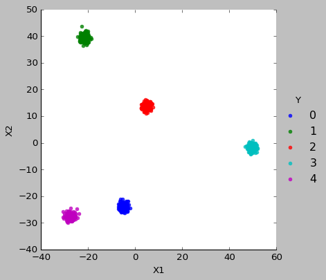

PCA
Table of Contents
1 PCA
1.1 计算方法
1.1.1 eigen decomposition
对于一个方阵 A, 存在向量 x 及实数 \(\lambda\), 使得 \(Ax=\lambda x\), 则 \(\lambda\) 为 A 的一个特征值, x 为 A 的一个特征向量.
计算时, 令 \(Ax-\lambda x=0 \implies (A-\lambda I)x=0\implies det(A-\lambda I)=0\), 计算出 \(\lambda\), 然后把 \(\lambda\) 代入 \((A-\lambda I)x=0\), 计算出 x
例如:
\(A=\begin{bmatrix}2&3\\2&1\end{bmatrix}\), \(A-\lambda I=\begin{bmatrix}2-\lambda&3\\2&1-\lambda\end{bmatrix}\),
\(det(A-\lambda I)=(2-\lambda)(1-\lambda)-6=0 \implies \lambda_1=-1, \lambda_2=4\)
代入 \(\lambda\) 到 \((A-\lambda I)x=0\):
当 \(\lambda_1=-1\) 时, 得到 \(x_1=\begin{bmatrix}1\\-1\end{bmatrix}\)
当 \(\lambda_2=4\) 时, 得到 \(x_2=\begin{bmatrix}3\\2\end{bmatrix}\)
写成矩阵的形式为 \(A=X\lambda X^{-1}\), 其中
\(X=\begin{bmatrix}1&3\\-1&2\end{bmatrix}\), \(\lambda\) 为 \(\begin{bmatrix}-1&0\\0&4\end{bmatrix}\)
import numpy as np A = np.matrix([[2, 3], [2, 1]]) x = np.matrix([[1, 3], [-1, 2]]) lamdas = np.matrix([[-1, 0], [0, 4]]) print(A.dot(x)) print(x.dot(lamdas)) print(np.linalg.eig(A))
[[-1 12] [ 1 8]] [[-1 12] [ 1 8]] (array([ 4., -1.]), matrix([[ 0.83205029, -0.70710678], [ 0.5547002 , 0.70710678]]))
另外, 若 A 为对称矩阵, 则 X 为正交矩阵, 则 \(A=X\lambda X^T\)
1.1.2 SVD
若 A 不是方阵, 则无法应用 eigen decomposition, 但可以应用 SVD 使得
\(A= U\Sigma V\), 其中:
\(A \in R^{m\times n}\), \(U \in R^{m\times q}\), \(\Sigma \in R^{q\times q}\), \(V \in R^{q\times n}\), \(q=min(m,n)\)
其中 \(U, V\) 是正交矩阵, \(\Sigma\) 是对角矩阵.
如何确定 \(U, \Sigma, V\):
令 \(AA^T=U\Sigma V\cdot V^T\Sigma^T U^T=U\Sigma^{2}U^T\), 这实际是在求 \(AA^T\) 的特征值与特征向量. 由于 \(AA^T\) 是对称矩阵, 所以 \(U\) 是正交矩阵
同理, 通过求解 \(A^T A\) 的特征向量可得 \(V\)
另外, 实际应用中求解 SVD 并不会使用上述方法, 因为比较慢1
1.1.3 PCA
\(X \in R^{m\times n}\) 是我们原始的数据矩阵, m 个样本, n 个 feature
对 \(X^TX\) 进行 eigen decomposition, 使得 \(X^TX=V\lambda V^T\).
定义一个变换 \(Y=XV\), 由于 \(Y^TY=V^TX^TXV=\lambda\) 是一个对角矩阵, 所以 Y 所有 feature 都是不相关的. \(\lambda\) 对角线上的值代表了不同 feature 的方差, 我们选择较大的方差对应的 feature \(Y'\), 由 \(X\) 得到 \(Y'\) 过程即 PCA
计算 \(X^TX\) 可能比较慢, 所以也可以通过 SVD 来求解:
先计算 X 的 SVD, 然后由于 \(X^TX=V^T\Sigma^T U^T\cdot U\Sigma V=V^T\Sigma^{2}V\), 所以 SVD 的 \(V^T\) 即是 eigen decomposition 的 V
import numpy as np import time import sklearn.decomposition A = np.random.randn(1000, 1000) start = time.time() np.linalg.eig(A.dot(A.T)) end = time.time() print("PCA using eig:", end - start) start = time.time() np.linalg.svd(A, full_matrices=False) end = time.time() print("PCA using svd:", end - start) start = time.time() pca = sklearn.decomposition.PCA(n_components=1000) pca.fit(A) end = time.time() print("PCA using pca:", end - start)
PCA using eig: 0.7494478225708008 PCA using svd: 0.4002048969268799 PCA using pca: 0.3598144054412842
1.2 实际意义
1.2.1 eigen decomposition
\(Ax\) 表示对向量 x 进行矩阵变换. A 代表了具体的变换, 包括旋转和拉伸. 通过特征向量和特征值可以直观的描述这种变换
import numpy as np import matplotlib.pyplot as plt import math plt.style.use("classic") def colockwise_rotate(theta, orig): # radian = theta * np.pi / 180 radian = math.radians(theta) m = np.array([[np.cos(radian), np.sin(radian)], [-np.sin(radian), np.cos(radian)]]) return m.dot(orig.T).T, m def counter_colockwise_rotate(theta, orig): # radian = theta * np.pi / 180 radian = math.radians(theta) m = np.array([[np.cos(radian), -np.sin(radian)], [np.sin(radian), np.cos(radian)]]) return m.dot(orig.T).T, m def strech(ratio, orig): m = np.array([[ratio[0], 0], [0, ratio[1]]]) return m.dot(orig.T).T, m def transform(m, orig): return m.dot(orig.T).T plt.axis("equal") r0 = np.array([[0., 0.], [0., 1.], [1., 1.], [1., 0.], [0., 0.]]) plt.plot(r0[:, 0], r0[:, 1]) r1, m1 = colockwise_rotate(45, r0) plt.plot(r1[:, 0], r1[:, 1]) r1, m2 = strech((1.5, 0.5), r1) plt.plot(r1[:, 0], r1[:, 1]) r1, m3 = counter_colockwise_rotate(45, r1) plt.plot(r1[:, 0], r1[:, 1]) m4 = m3.dot(m2.dot(m1)) r2 = transform(m4, r0) np.allclose(r1, r2) s, v = np.linalg.eig(m4) xx = np.linspace(-0.5, 2, 100) yy = -xx * (v[0, 0] / v[1, 0]) yy2 = -xx * (v[0, 1] / v[1, 1]) plt.plot(xx, yy, xx, yy2) plt.show()

1.2.2 PCA
PCA 的意义是把原来的 feature 映射到一个新的坐标系中, 使得:
- 新 feature 的方差尽可能大
- 不同 feature 两两正交, 没有相关性
import matplotlib.pyplot as plt import seaborn as sb import pandas as pd import numpy as np from sklearn.datasets import make_regression from sklearn.decomposition import PCA plt.axis('equal') X, Y = make_regression(n_samples=100, n_features=1, n_targets=1, noise=5, random_state=4) X = np.c_[X, Y / 100] plt.scatter(X[:, 0], X[:, 1]) pca = PCA(n_components=2) pca.fit(X) # sklearn 算出来的特征向量是行向量 # 特征向量有两个: v1=[ 0.79696636 0.60402369], v2=[-0.60402369 0.79696636] # 两个向量是正交的, 其 v1 对应 l1, v2 对应 l2 # # PCA 会把 X 映射到 XV, 所以新的 feature Y 相当于原来的点 (x1,y1) 转换到 v1, v2 # 为基的坐标系中的新坐标. 其中 XV1 对应的是 X 到 l1 的距离, XV2 对应的是 X 到 l2 # 的距离. 显然 XV1 的方差很大, XV2 的方差很小. 方差小意味着区分度不高. 所以我们 # 只保留 XV1 做为新 feature. # print("eigen vector:\n", pca.components_) v = pca.components_ print("std from Y:\n", X.dot(v.T).std(axis=0)) print("singular_values_:\n", pca.singular_values_) xx = np.linspace(-3, 3, 100) yy = -xx * (v[0, 0] / v[0, 1]) plt.plot(xx, yy, label="l1") yy2 = -xx * (v[1, 0] / v[1, 1]) plt.plot(xx, yy2, label="l2") plt.legend() plt.show()

1.3 举例
1.3.1 使用 Eigen, SVD 及 sklearn 进行 PCA
import numpy as np from numpy import linalg np.set_printoptions(formatter={'float': '{: 0.3f}'.format}) # X 为 5x4 的矩阵, 4 个 features, 5 个样本 X = np.array([[1, 2, 3, 4], [2, 4, 6, 8], [1, 3, 5, 7], [3, 9, 15, 21], [0, 1, 2, 3]]).astype(np.float) # X^TX 是协方差的前提是各 features 均值为 0 X -= np.mean(X, axis=0) print("------ PCA with eigen ------") # PCA with eigen decomposition # 协方差矩阵, 忽略了 1/(m-1) cov = np.dot(X.T, X) s, v = linalg.eig(cov) print("eigen value:", s) print("eigen vector:\n", v) # A=V \lambda V.T cov2 = np.dot(v * s, v.T) print("t2==t", np.allclose(cov2, cov)) v2 = v[:, :2] Y = np.dot(X, v2) print("X after PCA using eigen:\n", Y) # PCA with SVD print("------ PCA with SVD ------") u, s, v = linalg.svd(X, full_matrices=False) print("eigen value from svd:", s ** 2) print("eigen vector from svd:\n", v.T) X2 = np.dot(u * s, v) print("X2 == X", np.allclose(X2, X)) v2 = v.T[:, :2] Y = np.dot(X, v2) print("X after PCA using SVD:\n", Y) # sklearn print("------ PCA with sklearn PCA ------") # sklearn 要求 X 的 shape 为 mxn, 其中 m 为样本数, n 为 feature 个数 from sklearn.decomposition import PCA pca = PCA(n_components=2) pca.fit(X) print("eigen value from PCA:", pca.singular_values_ ** 2) print("eigen vector from PCA:\n", pca.components_) Y = pca.transform(X) print("X after PCA using PCA:\n", Y)
-–— PCA with eigen -–— eigen value: [ 358.762 1.238 0.000 -0.000] eigen vector: [[-0.110 0.829 -0.512 0.150] [-0.328 0.439 0.828 0.192] [-0.546 0.048 -0.119 -0.835] [-0.763 -0.342 -0.196 0.493]] t2==t True X after PCA using eigen: [[ 5.892 0.300] [ 0.436 0.781] [ 2.182 -0.193] [-16.148 -0.214] [ 7.638 -0.674]] -–— PCA with SVD -–— eigen value from svd: [ 358.762 1.238 0.000 0.000] eigen vector from svd: [[ 0.110 -0.829 -0.223 0.500] [ 0.328 -0.439 -0.076 -0.833] [ 0.546 -0.048 0.820 0.165] [ 0.763 0.342 -0.521 0.168]] X2 == X True X after PCA using SVD: [[-5.892 -0.300] [-0.436 -0.781] [-2.182 0.193] [ 16.148 0.214] [-7.638 0.674]] -–— PCA with sklearn PCA -–— eigen value from PCA: [ 358.762 1.238] eigen vector from PCA: [[ 0.110 0.328 0.546 0.763] [ 0.829 0.439 0.048 -0.342]] X after PCA using PCA: [[-5.892 0.300] [-0.436 0.781] [-2.182 -0.193] [ 16.148 -0.214] [-7.638 -0.674]]
1.3.2 使用 PCA 进行特征提取
特征提取是指对原特征进行变换(线性或非线性变换)后得到新的特征, 新的特征相比旧的特征更容易区分.
PCA 通过线性变换得到的特征是正交的, 且方差更大, 所以更容易区分. 特别的, 通过选择方差最大的几个特征, 可以达到降维的效果
import matplotlib.pyplot as plt import seaborn as sb import pandas as pd import numpy as np from sklearn.datasets import make_blobs from sklearn import decomposition plt.style.use("classic") X, Y = make_blobs(n_features=100, n_samples=1000, centers=5, cluster_std=1) pca = decomposition.PCA(n_components=100) pca.fit(X) # print(pca.singular_values_) pca = decomposition.PCA(n_components=2) pca.fit(X) X = pca.transform(X) df = pd.DataFrame({"X1": X[:, 0], "X2": X[:, 1], "Y": Y}) sb.lmplot( x="X1", y="X2", data=df, fit_reg=False, hue='Y', legend=True, scatter_kws={"s": 20}) plt.show()
